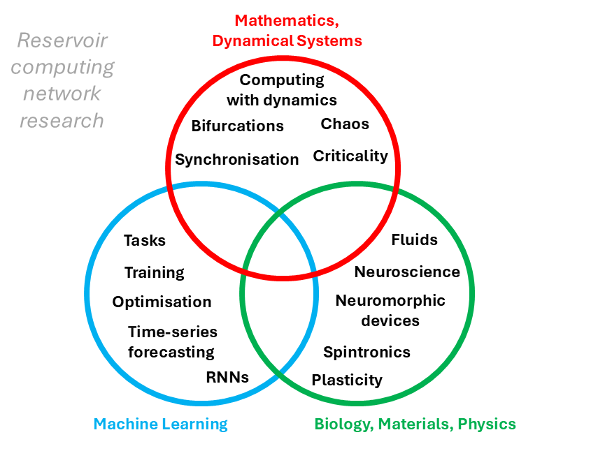

My research is interdisciplinary, straddling branches of mathematics, neuroscience, network theory, and machine learning.
I am mostly occupied with studying recurrent neural networks and their structure–dynamics–function relationships in the context of reservoir computing and biological brain networks.
Recurrent Neural Network
Reservoir Computing
Network Structure
Dynamics
Applied Topology
Heterosynaptic Plasticity
Biological Connectomes

My main PhD work (which began with a collaboration at Bristol University) focuses on the question of structure and function in brain-based (connectome) recurrent neural networks (RNNs).
We use the adult and larva Drosophila connectomes to build RNNs and test computational capacity on tasks, and analyse their structural and dynamical robustness.
We find that the topology of brain-based networks enables robust neural network function under high sparsity.
Another question we address: how does the brain, or any autonomous system, efficiently and locally ``learn" to extract specific information from the high-dimensional, complex activity of a recurrent population?
This line of research involves the mathematical analysis of linear RNNs, showing how an understanding of the exact geometry of neural dynamics can be harnessed for useful computation.
I have explored the structural and functional implications of heterosynaptic plasticity rules. See this poster and this write-up for related work relating to small-world networks. I have also researched how heterosynaptic plasticity may act as a mechanism for statistical generalisation of Hebbian learning (this may appear as a paper sometime).
I'm part of a collaboration with Bristol, using mathematical modelling to study synaptic maturation and network development.
I’ve also worked on how deficits in short-term plasticity (e.g., in psychosis) affect decision-making and working memory, primarily using attractor-based dynamical systems. See an example.
I have been interested in the use of topological data analysis in the study of large datasets.
I have research interests in assessment theory within mathematics education. See an example here.